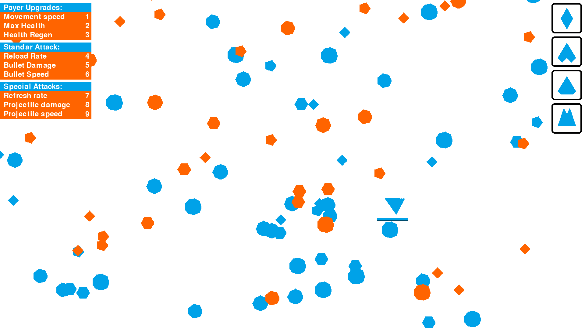

Blink shooter (to fargedimensjoner)
Et Python-shooter, laget under en game jam på Torshus folkehøyskole. Det brukte webkameraet til å oppdage blunk, og hvert blunk kastet spilleren mellom to fargedimensjoner. Bare den fargen du var i kunne skade fiender med samme farge, så du måtte kontrollere blunkene for å bli i riktig dimensjon.
To minutter gameplay.

Mekanikken
- Blunkdeteksjon fra webkamera. Enkel eye-aspect-ratio-heuristikk på webkamerastrømmen, kalibrert per spiller.
- To dimensjoner: rød og blå. Hvert blunk byttet. Fargen din kunne bare skade fiender av samme farge. Den andre halvparten av banen var uangripelig til du blunket igjen.
- Oppgraderinger. Vanlig meta-progresjon (skuddhastighet, helse, bevegelseshastighet), men mekanikken som gjorde det rart, var at å la være å blunke ble en ferdighet.
- En lasteskjerm med spinnende piler som var helt unødvendig, og helt verdt det.
Hva jeg lærte
At kjernemekanikken i et spill er det spilleren fortsatt snakker om dagen etter. Ingen husket oppgraderingstreet. Alle husket at de prøvde å la være å blunke. Begrensningsdrevet design slår funksjonsdrevet design.
Python-serverkoden er borte. Folkehøyskolefilene overlevde ikke flyttingen. Videoen over er det meste av det som er igjen.